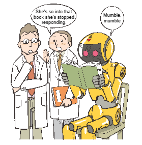

Library and Information Science Laboratory,
Lifelong Learning Infrastructure Management Course,
Graduate School of Education, the University of Tokyo
As everyone would agree, there is a qualitative difference between reading about a restaurant or a dish and thinking it would be delicious, and actually eating the dish and experiencing this delicious flavor. Likewise, everyone would recognize that "understanding" the flavor refers to the latter. While the distinction is not as obvious as for food, probably most people would also agree that reading a review of a movie is not the same thing as understanding the movie.
However, when it comes to so-called "knowledge" and the books that convey it, we tend to think that if we read an explanation of a book, we "understand" the original book. Even though the difference could be the same as that between eating a dish and reading a description of the dish, in the case of books we may confuse the two because the medium for experiencing "understanding" and the medium for providing the explanation are identical — words.
Thinking about it this way clarifies a few things. First, the instant of "understanding" — that is, of "comprehending" — is an experience, different from receiving or manipulating information. The second is that when people "understand" something, they often go through the process of becoming absorbed in it. In other words, people absorb universal knowledge by so-called "overfitting ".
Given that, it would be difficult to give computers the same "understanding" as people while avoiding overfitting and trying to achieve generalization by using machine learning methods to handle the language used to convey knowledge. To avoid giving up and claiming "comprehension" as a special right that only humans can enjoy, which cannot be replicated by computers, and to instead try to achieve computer "understanding", one must approach towards "comprehension" as much as possible. For example, from a conceptual standpoint, how to handle computer replication of the process of "absorption" — quite apart from the methods involved — is an extremely important issue.
As "understanding" is an intellectual experience, we must regard the process of "absorption" not as an emotional process but as a logical process. The most exciting aspect of NII's "Could a Robot Get Into the University of Tokyo?" challenge is not whether it succeeds in creating a robot that can actually enter the University of Tokyo — partly because some say that sufficiently advanced information processing would be sufficient to achieve this. Rather, the most exciting point is to what degree it can clearly advance "understanding" towards "comprehension", without merely reducing it to information manipulation and processing.